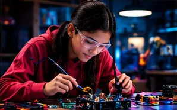

AI and STEM classes for kids in Salmiya introduce pattern recognition and interactive machine learning models—plus ethical awareness about privacy and responsible use.

AI and Robotics Club | The 100 Mission AI & Robotics Hero Journey
Disclosure: This page contains affiliate links. We may earn from qualifying purchases at no extra cost to you. Links are intended for parents and educators, not as marketing directed at young children.
Machine Learning and Pattern Recognition: Future Skills Training in Salmiya
Artificial intelligence is introduced through pattern recognition experiments and interactive models—not as magic. Ethical awareness ensures children understand data privacy, digital footprints and responsible technology use.
How parents can support without taking over
Ask the child to verify an AI answer from another source. Supervise accounts.
Safety, honesty and next steps
Message WhatsApp at +92 322 4217059. Never share personal data with bots.
Frequently asked questions
How is artificial intelligence introduced in Salmiya classes?
Through pattern recognition experiments and interactive machine learning models.
Why is ethical AI awareness taught to young learners?
To ensure children understand data privacy, digital footprints, and responsible technology use.
Who can I contact for immediate course details?
Message our official WhatsApp helpline at +92 322 4217059.